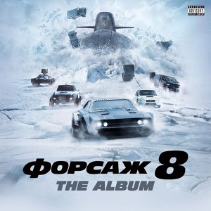

вселенная
главные персонажи
 Браян О'коннер(Пол Уокер)
Браян О'коннер(Пол Уокер)Браян О'коннер(Пол Уокер)
Брайан — коп под прикрытием. Его задача в первой части заключалась в поимке банды налётчиков, во главе которой стоял Доминик Торетто. Внедрившись в его банду, он проводит расследование, но сам не верит в причастность Дома. Факты же говорят об обратном. В итоге, убедив себя, что Дом и есть тот самый преступник, он решается поймать его, но в конце фильма почему-то отпускает.
Во второй части Брайан появляется в Майами, но его вербует таможенная служба и ФБР для поимки Картера Верона, крупного контрабандиста. Вместе с другом Романом Пирсом О’Коннер внедряется к нему на службу и проворачивает дело, рискуя собственной жизнью. К счастью, ему удаётся спастись самому и спасти Монику Фуэнтес, женщину-агента, работавшую у Верона.
В четвёртой части фильма Брайан работает в ФБР. Его заданием становится поиск крупного наркобарона Артуро Брага. Параллельно Брайану Брагу ищет и Доминик, который хочет отомстить ему за Летти. Они объединяют свои усилия и хватают Брагу. Сам Доминик отправляется в тюрьму.
В пятой части Брайан и Миа Торетто вытаскивают Доминика из тюрьмы, а сами скрываются в Рио-де-Жанейро, где старый друг Винс предлагает им работёнку: нужно угнать машины из поезда. К делу подключается и Доминик. Но они снова влипают в историю. Машина, которую они угнали, принадлежала бразильскому бизнесмену и крупной шишке в Рио Эрнану Рейесу, который затевает поиски угонщиков. Помимо Рейеса Брайана и Доминика разыскивает и специальный агент Люк Хоббс. Тогда Брайан и Дом решаются на своё последнее дело. Они собирают команду, чтобы обчистить Рейеса и «уйти навсегда» в новую жизнь. После долгой подготовки Брайан и Дом, заручившись подмогой друзей и Хоббса, перешедшего на их сторону, увозят сейф Рейеса прямо из полицейского участка. Деньги вся команда делит поровну и расходится. Брайн вместе с Мией поселяется на берегу моря и живёт новой жизнью.
В шестой части у Брайана и Миа рождается ребёнок. Но о тихой жизни они могут забыть. Вновь появляется специальный агент Хоббс, который просит помощи у Доминика и его команды. Брайан готов помочь другу.
В 2013 году погиб актёр Пол Уокер, исполняющий роль Брайана О’Коннера. Роль Брайана в некоторых сценах седьмой части играл младший брат Пола Уокера — Коди. В январе 2014 года создатели картины сообщили, что персонаж Уокера не умрёт на экране, а будет «выведен из франшизы»
 Винс Кретч(Метт Шульце)
Винс Кретч(Метт Шульце)Винс Кретч(Метт Шульце)
Уличный гонщик и друг детства Доминика Торетто. В первой части фильма вместе с Домом участвовал в налётах на грузовики. С появлением в «семье» Брайана стал относиться к нему резко негативно, из-за чего у него возникали размолвки с Торетто. Винс оказался единственным членом банды, который заподозрил за Брайном его двойную игру, но в семье ему не поверили. Во время последнего налёта в финале первого фильма он запрыгнул на грузовик, водитель которого оказался вооружён. Спастись ему помогли Миа и Брайн, вовремя снявшие его с грузовика. От полученных ранений Винс потерял сознание и был доставлен на вертолёте в госпиталь.
В пятой части Винс скрывается от властей США в Бразилии, где у него начинается новая жизнь. Бежавшие после спасения Дома из тюрьмы, Миа и Брайн приходят к Винсу, который предлагает им опасную работу. Это стало поводом его изгнания из команды, так как задание оказалось подставным, и вся команда снова в опасности. Позже Винс помогает Мие скрыться от бандитов Рейеса, за что Дом снова принимает его в команду. Но не успев начать операцию по ограблению Рейеса, Винс вместе с Домом, Брайаном и Мией попадают в руки к Хоббсу. По пути в аэропорт, откуда они должны были быть депортированы в штаты, произошло нападение на бронеавтомобиль Хоббса. В ходе перестрелки Винс получает ранение и умирает. Его сын и жена получают компенсацию от Дома в виде доли от дела.
 Доминник Торетто(Вин Дизель)
Доминник Торетто(Вин Дизель)Доминник Торетто(Вин Дизель)
Один из главных протагонистов серии, не появившийся только во втором фильме. Доминик — уличный гонщик, глава банды налётчиков. Поиски банды навели на него Брайна О’Коннера, который внедряется в его команду. После того, как Доминик был раскрыт, Брайн отпускает его. Не теряя времени, Дом отправляется на поиски нового прибежища в Латинскую Америку, где заводит новую команду.
В четвёртой части вместе с Летти, своей женой, Доминик крадёт бензин, но его быстро обнаруживают. Он снова скрывается, но весть о гибели Летти заставляет его вернуться в Лос-Анджелес, где он ищет виновных. Поиски приводят его к Артуро Браге, которого ищет и Брайан. Судьба снова заставляет их объединить усилия: они ловят преступника, убивают виновного в смерти Летти, Феникса. Но Дом не бежит от закона, а соглашается предстать перед судом. Несмотря на все надежды, суд приговорил Дома к 25 годам без права на досрочное освобождение.
По дороге в тюрьму автобус с заключёнными преследует три машины — это были Брайан, Миа, Лео и Сантос. Они освободили Доминика и скрылись в Рио, где им представилась возможность "срубить" немного денег. Но друзья снова попадают в неприятность: машина, которую они украли, принадлежала крупной шишке Эрнану Рейесу, который устроил на них охоту. Доминик и Брайан собрали команду и обчистили Рейеса. В третьей части Доминик появляется лишь в конце фильма во время заезда с Шоном.
Жизель Яшар(Галь Гадот)
Жизель Яшар(Галь Гадот)
В «Форсаже 4» она была одной из помощниц наркобарона Артуро Браги, которая занимается этим только для того, чтобы помочь своей семье. После оставляет его, чтобы помочь Доминику. В пятой части приезжает в Рио и принимает участие в ограблении. По сюжету Яшар сотрудничала с «Моссадом». Также появляется в шестой части. Собиралась уехать в Токио и жить с Ханом, но погибла в конце шестого фильма, спасая его.
 Летти Ортис(Мишель Родригес)
Летти Ортис(Мишель Родригес)Летти Ортис(Мишель Родригес)
Летти — жена Доминика Торетто, гонщица. Ей приходится вместе с Домиником скрываться в Латинской Америке, где они оба крадут бензин. В четвёртой части Доминик оставляет её, чтобы не подставлять под удар. Она тем временем связывается с Брайаном и договаривается, что поможет ему раскрыть дело Артуро Браги, если Доминика перестанут преследовать власти. Феникс, правая рука Браги, убивает её, как и всех курьеров, работавших на Брагу, но в пятом фильме выясняется, что она выжила. В шестой части выясняется, что после попытки убийства в четвёртой части, она потеряла память и присоединилась к банде Шоу. В конце 6 фильма Доминик возвращает Летти домой. Как оказывается из 7 части Доминик с Летти женаты.
Люк Хоббс(Дуэйн Джонсон)
Люк Хоббс(Дуэйн Джонсон)
Элитный спецагент, охотившийся за Домиником и Брайаном в пятой части фильма. Обладает поразительным чутьём, умом, очень жесток (был прозван Брайаном «Ветхим заветом»: кровь, пули и гнев Божий). Люк помог Брайану и Доминику украсть сейф Рейеса. Однако в конце фильма потребовал оставить сейф у него, но команда грабителей перехитрила Люка. В шестой части Хоббс просит Доминика и его команды о помощи для того чтобы поймать Оуэна Шоу, за это он обещает для них снятия всех обвинений, что в конце фильма он и сделал. В седьмой части Хоббс работает в Лос-Анджелесе вместе с Еленой. В начале фильма был атакован Деккардом Шоу, получив серьёзные ранения попадает в больницу. В конце оправившись он присоединяется к команде Доминика, убив террориста Мозе Джаканде и посадив Шоу в тюрьму.
Миа Торетто(Джордана Брюстер)
Миа Торетто(Джордана Брюстер)
Миа — сестра Доминика Торетто и жена Брайана О’Коннера. В первой части она оказывается обманута Брайаном, работавшим копом. Спустя пять лет, они снова встречаются и продолжают отношения. В пятой части Миа оказывается беременна от Брайана. В шестой части рожает мальчика по имени Джек. В седьмой части выясняется, что Миа беременна во второй раз, на этот раз девочкой.
 Рико Сантос(Дон Омар)
Рико Сантос(Дон Омар)Рико Сантос(Дон Омар)
Член команды Доминика Торетто. Лучший друг и напарник Тего, с которым они постоянно спорят и ругаются.
Роман Пирс(Тайриз Гибсон)
Роман Пирс(Тайриз Гибсон)
Второй главный герой фильма «Двойной форсаж». Роман — друг детства Брайана, который по глупости попал в тюрьму. Брайан, спустя три года, навещает Романа, чтобы предложить ему работу в Майами — сыграть роль уличных гонщиков и внедриться на службу к контрабандисту Картеру Вероне. Роман не без колебаний, но соглашается на работу, по-прежнему не доверяя Брайану. По ходу фильма выясняется, что Картер задумал убить обоих после выполнения работы, поэтому Роман и Брайан решают провести его, забрав все деньги. Сделать этого им не удаётся: Роман сам отдаёт деньги полиции, припрятав лишь несколько долларовых пачек под пояс.
В пятой части Роман является в Рио-де-Жанейро по приглашению Брайна, чтобы провернуть одно дельце. Их целью стал Эрнан Рейес, местный заправила. Герои похищают его сейф и делят деньги между всеми членами команды поровну. В конце фильма Роман приобретает спорткар Koenigsegg CCXR.
 Тедж Паркер(Кристофер Бриджес)
Тедж Паркер(Кристофер Бриджес)Тедж Паркер(Кристофер Бриджес)
Программист, автомеханик и старый друг Брайана О’Коннера из второй части. По словам того же Брайана, является одним из лучших электронщиков Восточного побережья. Помогал ему и Роману скрыться от полиции во время погони. В пятой части принимал участие в ограблении Рейеса. А в шестой части помогал Доминику и его команде найти Летти и обезвредить Оуэна Шоу. Также появился в седьмом Форсаже, где в команде уже знакомых нам героев обезвреживает Деккарда Шоу и террористическую группировку под руковоством Мози Джаканде.
Хан Лю(Сунг Канг)
Хан Лю(Сунг Канг)
Уличный гонщик, друг Доминика Торетто и будущий партнёр по бизнесу Такаши (ДиКея). Больше всего времени ему уделено в третьем «Форсаже», хотя он также появляется в четвёртой, пятой и в шестой частях. Вырос в США, после неоднократно помогал Дому в грабежах, в том числе и в ограблении Рейеса в Рио-де-Жанейро. После смерти Жизель, Хан переезжает в Токио. В третьем фильме занимается бизнесом с Такаши, тогда же знакомится с американцем Шоном Босуэллом. Отмывая у Такаши деньги, Хан попутно обучал Шона дрифту. В конце шестого фильма показан фрагмент, в котором Хан погибает в собственной машине, когда в него врезается Деккард Шоу (брат главного антагониста из шестой части).
 Деккард Шоу(Джейсон Стейтем)
Деккард Шоу(Джейсон Стейтем) Деккард Шоу(Джейсон Стейтем)
Главный антагонист седьмого фильма, после, один из главных героев. Бывший военный, особо опасный преступник. Старший брат Оуэна Шоу и Хэтти Шоу.
фильмы
 1 часть-форсаж
1 часть-форсаж1 часть-форсаж
Его зовут Брайан, и он — фанат турбин и нитроускорителей. Он пытается попасть в автобанду легендарного Доминика Торетто, чемпиона опасных и незаконных уличных гонок. Брайан также полицейский, и его задание — втереться в доверие к Торетто, подозреваемому в причастности к дерзким грабежам грузовиков, совершаемым прямо на ходу.
 2 часть-двойной форсаж
2 часть-двойной форсаж2 часть-двойной форсаж
Бывший полицейский Брайан О`Коннер с напарником Романом Пирсом собирается перевезти крупную сумму грязных денег известного мафиози Картера Верона. Но на самом деле эта работа является только прикрытием для Брайана, который вместе с тайным агентом Моникой Фуэнтес должен уличить изворотливого преступника.
 3 часть-форсаж токийский дрифт
3 часть-форсаж токийский дрифт 3 часть-форсаж токийский дрифт
Старшеклассник Шон Босуэлл только и делает, что попадает в неприятности. После очередной выходки — импровизированных гонок и аварии — парню уже светит тюрьма, тогда мать решает отправить его к отцу в Японию. В первый же день в японской школе он знакомится с соотечественником, а тот притаскивает нового друга на подпольные соревнования по дрифт-рейсингу. Тут Шону открывается доселе невиданное искусство прохождения поворотов — и он сразу же ввязывается в спор, с позором проиграв который, оказывается должен местному авторитету по имени Хан.
игры
все игры
 Fast & Furious Crossroads
Fast & Furious Crossroads Fast & Furious: Showdown
Fast & Furious: Showdown Fast & Furious Spy Racers
Fast & Furious Spy Racersмузыка
One Shot (feat. Lil Baby)
No Hay Amor (Arcangel)
murder remix (feat. 21 savage)